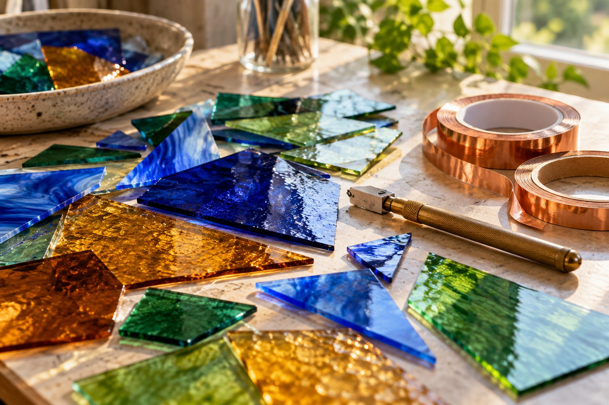

経験・技量に合わせる
自宅教室は標準カリキュラムを設けず、経験・技量・作りたい作品に応じて指導する案内です。希望する制作内容をご相談ください。

非公式デザイン見本保存された公式掲載情報をもとにした参考案内です。最新の料金・受付状況・実施条件は公式でご確認ください。
GUIDE 01
自宅教室は標準カリキュラムを設けず、経験・技量・作りたい作品に応じて指導する案内です。希望する制作内容をご相談ください。
自宅教室と出張教室の双方で一日体験を案内し、工具を貸与しています。体験の料金や現在の日程・材料の扱いは公式へご確認ください。
GUIDE 02
1回2時間で1,500円、入会金5,000円という案内です。税区分・材料費と現在の適用条件は公式へご確認ください。一日体験の料金とは別です。
講座・サークルは火曜13:30〜15:30、月3回の掲載案内があります。現在の開講日と空き状況はご確認ください。自宅教室の日時とは異なります。
OFFICIAL INFORMATION
希望する内容の詳しい条件と日程は、公式ページへ。この見本では申込・予約・決済を受け付けていません。